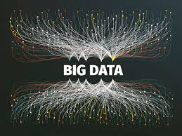

This course will give students an overview of the issues related to the
management of unstructured data, i.e. data not stored in a table or
database. Sources of unstructured data include bodies of text, social
media applications, images, and audio. In the process of exploring
various forms of unstructured data, students will be exposed to new
programming languages and tools that are useful for managing this type
of data (e.g. Python and bash). Other topics covered in the course
include web scraping, natural language processing, and manipulating
images/videos/audio files. Prerequisites: DSCI 210 and CS 234, or
instructor¿s permission. Offered alternate years.
Instructor
Back to classes
